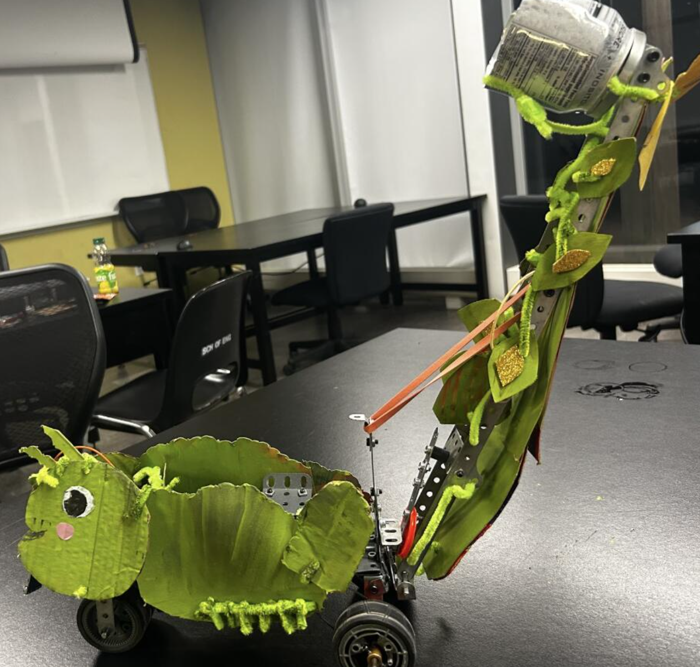
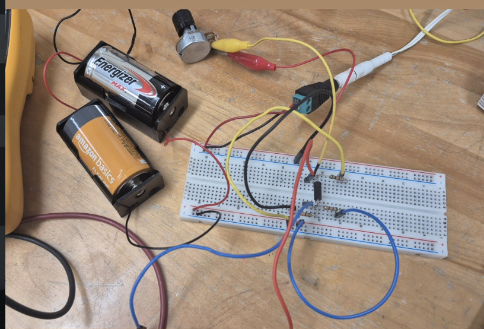
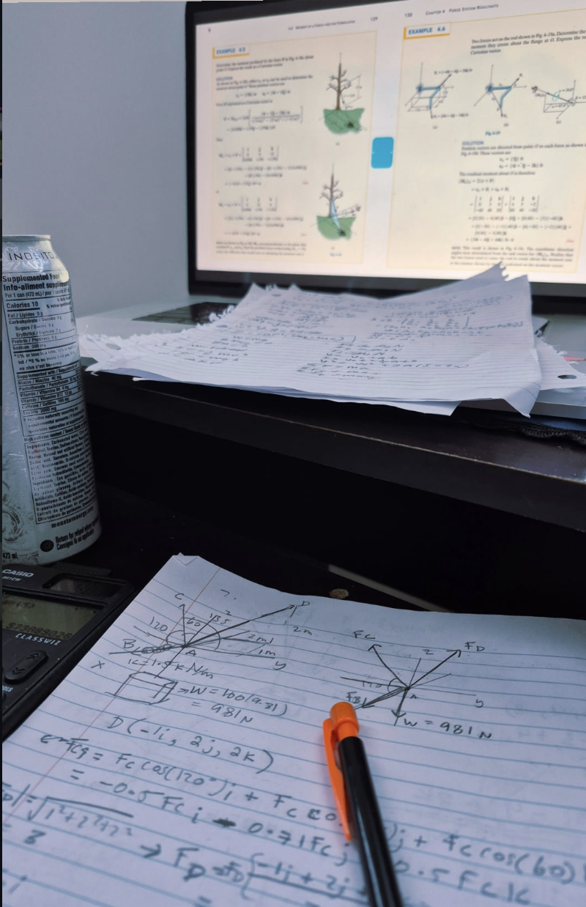

Turning curiosity into real-world solutions
Engineering, for me, is the bridge between curiosity and impact. As a woman and a minority in a field where we are often underrepresented, I’ve learned that my perspective isn’t just a difference, its also strength. To be honest, being in a male-dominated space has only fueled my determination to lead and motivated me to build technology that is as inclusive as it is innovative. I choose engineering because it gives me the toolkit to turn complex challenges into real-world solutions which i think is so cool, and because I want to be the representation that inspires the next generation of girls to realize they don't just belong in STEM, they are the future of it



Whether I’m working with electronics, coding a prototype, or iterating on a website design, I get to learn by doing. Debugging and improving my work is where the growth happens.
Engineering is so powerful when it’s built with purpose! I’m motivated by projects that solve real problems, support learning, or make everyday experiences better.
I’m excited to keep experimenting, collaborating, and turning new ideas into real projects. The best part about engineering is that there’s always something new to learn!